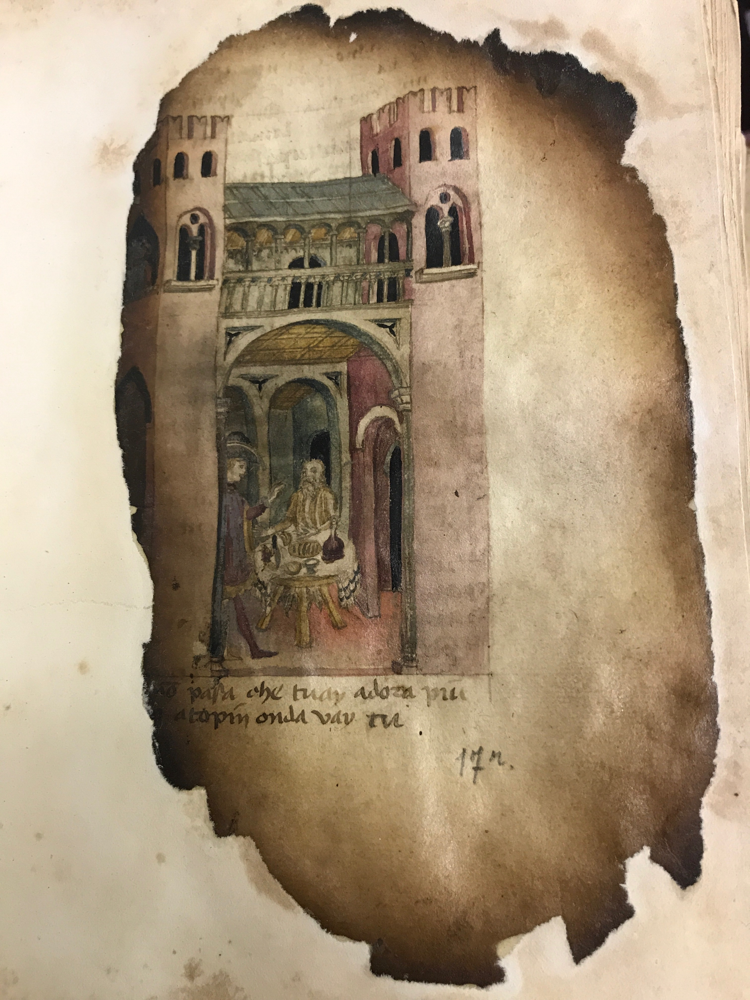

Huon d'Auvergne Digital Archive
A digital edition of Huon d'Auvergne, a pre-modern, Franco-Italian Epic
A digital edition of Huon d'Auvergne, a pre-modern, Franco-Italian Epic
The scribe of manuscript N.III.19 of the Turin Biblioteca Nazionale dates the work to 1441. A paper codex measuring 27 cm by 20 cm, manuscript T survives today despite a tortuous history. In 1904, a fire ravaged the Biblioteca Nazionale, destroying or badly damaging many of the library’s holdings. The Turin Huon d’Auvergne survived, even if the text and illuminations that extended into the outer margins of the manuscript are missing or damaged beyond repair. Fortunately, the nineteenth-century philologist Pio Rajna made a personal transcription of the text of manuscript T, and a notebook of this transcription, alongside another of manuscript 32 of the Biblioteca del Seminario Vescovile (manuscript P), are conserved at the Biblioteca Marucelliana of Florence. T has since been restored, with recto pasted onto the recto of a new sheet and the verso pasted onto the verso of that same sheet. The folios have been carefully consecutively numbered in the bottom right in pencil on the recto side; there are 183 total. There is one blank sheet at the end and at the beginning (not included in the count). The following pages represent a digital reconstruction of the Turin Huon d’Auvergne, drawing from the Rajna notebook when the text is not legible in the manuscript. We are careful to make it clear to the reader which portions of the text arrive to us secondarily through the Rajna transcription. In the navigation bar, the “Rajna notebook” button will highlight in red all portions of the text taken from the notebook, leaving in black the portions of the text transcribed from the manuscript. Additionally, the “MS Image” button will allow for a side-by-side comparison of manuscript T and the transcription.
